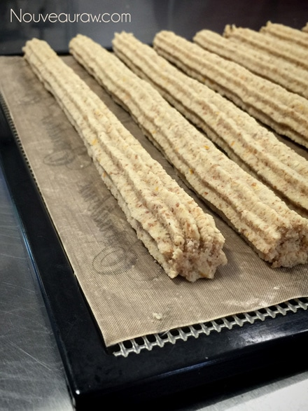
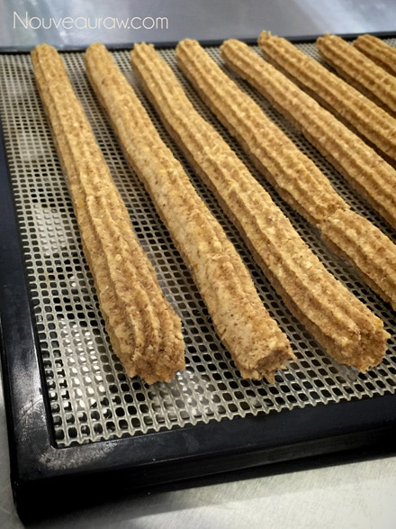

~ raw, vegan, gluten-free ~
Churros… oh how I love churros! But to be honest, it has been over ten years since I actually had one. My love affair with them stopped when I started to implement a healthier lifestyle.
I wish I had a great adventure story of when I used to eat them. I could envision a trip to the depths of Mexico… where I ate the most authentic churros that one had ever feasted upon. With a churro in each hand, twirling in my bright and colorful skirt… while mariachis surrounded me with song and dance. Didn’t happen. Or how some long, lost relative passed down a secret family recipe… Didn’t happen. I hope that I don’t disappoint you when I say that my only culinary experience of churros came from my periodic trips to Costco. Lol, Let’s move forward with the recipe.
Almond pulp…
Every batch of pulp will differ in moisture. This all depends on how much of the milk you can squeeze from the nut bag. Therefore, you may need to adjust the amount of liquids being used in recipes calling for nut pulp. If it is a really dry feeling, more moisture may need to be added. Or if the pulp is really wet, less moisture would probably be necessary.
It is also best to make sure that the pulp is unflavored and that is a step that has to be taken when first making almond milk. There is a link below that you can click on to learn more about this process if you are unfamiliar with it. BUT should your pulp already have small hints of sweetness to it, not to worry… I doubt it would be enough to affect the outcome of this recipe. I don’t recommend any substitutions for the almond pulp. It is the key ingredient that helped me create a light and airy batter.
Irish Moss Gel or Kelp Paste
Let me quickly comment about using this ingredient. The main question I get is, “Do I have to use it? Or What can I use instead?” Anything is possible when it comes to substituting ingredients. But I spend a lot of time developing recipes that have great flavor, texture, and appearance. Since many people have a hard time finding Irish moss (unless mail-ordered), I came up with the idea of creating a paste from raw kelp noodles. I can now happily report that both worked perfectly.
The purpose behind these pastes/gels is to give some added nutrition but even more important… the bread-like texture. If you are dead-set against using these ingredients, my next go-to would be a few tablespoons of psyllium husks. Have fun experimenting, but I highly recommend making the recipe the way I designed it for your first time.
Churro batter:
- 1 cup gluten-free rolled oats, ground
- 1/4 cup ground flax seeds
- 1/4 tsp Himalayan pink salt
- 1 1/2 cups moist, packed almond pulp
- Zest of 1 orange
- 1/3 cup orange juice
- 1/4 cup maple syrup
- 1/4 cup raw agave nectar or maple syrup
- 1/3 cup Irish moss gel or kelp noodle paste
- 2 Tbsp cold-pressed olive oil
- 1 tsp vanilla extract
Sugarcoating:
Chocolate dipping sauce:
Yields 1 1/4 cup
Preparation:
Churros:
- In the food processor, fitted with the “S” blade, break the rolled oats down to a flour-like consistency along with the ground flax and salt.
- Add the moist almond pulp, the zest of the orange, then the juice, sweetener, Irish moss or kelp paste, olive oil, and vanilla. Process until it all comes together nice and smooth.
- Depending on how moist your almond pulp is, you may need to add water, so the dough sticks together nicely. Add 1 Tbsp at a time until the right consistency is reached.
- Fit the piping bag with the Ateco 828 piping tip, load the bag with the batter and work out any air bubbles before you start to pipe.
- Line the dehydrator tray with a non-stick sheet or parchment paper.
- Hold the piping tip at a 45-degree angle and with gentle, even pressure start to press the batter from the bag. Travel across the tray at an even speed as you create the churro shape. We will cut them into smaller pieces once they are dried.
- Repeat this process until all the batter is used up.
- Dehydrate at 145 degrees for 1 hour, then reduce to 115 degrees for 6+ hours.
- Keep an eye on the churros; you don’t want them to get too dry. The inside should be pastry-like.
- Once dry, coat each churro with coconut oil and then gently coat them with the cinnamon mixture.
- I used organic coconut oil that is in a spray. This is ideal.
- In a shallow rectangle dish, I combined 2 Tbsp of raw coconut crystals and 2 Tbsp of cinnamon.
- Spray the churro and place in the dish with the cinnamon and shake the dish back and forth. The churro should roll side to side, coating itself.
Chocolate dipping sauce:
- In the blender combine the bananas, cacao powder, salt, lecithin, and sweetener. Blend until creamy.
- The riper the bananas the sweet they will be so the extra sweetener may not be needed. Taste test before adding.
- Lecithin is optional. I added for nutritional reasons and to thicken just a tad.
- Use within 2 days. Store extra in the fridge.
The Institute of Culinary Ingredients™
- To learn more about maple syrup by clicking (here).
- Raw Coconut Crystals add a “brown sugar” flavor to a recipe. Read about it (here).
- What is raw cacao powder?
- Why do I specify Ceylon cinnamon? Click (here) to learn why.
- What is Himalayan pink salt and does it really matter? Click (here) to read more about it.
- Is coconut butter the same as coconut oil? Click (here) to find out.
- Are oats gluten-free? Yes, read more about that (here).
- Are oats raw? Yes, they can be found. Click (here) to learn more.
- Do I need to soak and dehydrate oats? Not required but recommended. Click (here) to see why.
- Learn how to grind your own flaxseeds for ultimate freshness and nutrition. Click (here).
Culinary Explanations:
- Why do I start the dehydrator at 145 degrees (F)? Click (here) to learn the reason behind this.
- When working with fresh ingredients it is important to taste test as you build a recipe. Learn why (here).
- Don’t own a dehydrator? Learn how to use your oven (here). I do however truly believe that it is a worthwhile investment. Click (here) to learn what I use.
Ready for the dehydrator.

After 4 hours, I rolled them off onto the mesh sheet. You can
see how they have darkened during the dry time so far.
